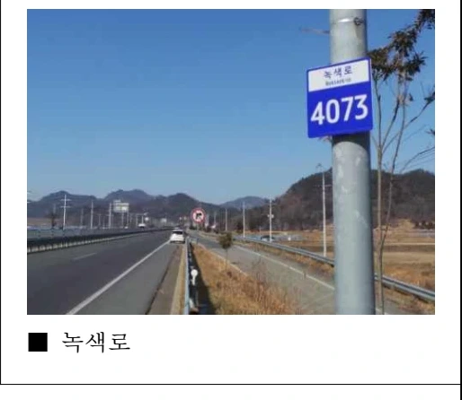

956. Which of the following is NOT true about this picture?

- ①It is an address information facility (basic number sign) installed on a road or a vacant lot where there are no buildings.
- ②It is a basic number sign installed on the right side of the road, 4.73 km from the starting point of Noksaek-ro.
- ③It is a basic number sign installed on the left side of the road, 40.73 km from the starting point of Noksaek-ro.
- ④The road name and basic number displayed on the basic number sign allow you to determine the exact location of that point.
Show answer
Answer
② It is a basic number sign installed on the right side of the road, 4.73 km from the starting point of Noksaek-ro.
Reference
Base address number plates are installed on pillars where streetlights, traffic lights, road signs, etc. are installed, at places where there is a need to indicate the location on road tunnels and bridges, etc., and at other places deemed necessary by the mayor, etc. Article 9 of the Road Name and Address Act (Installation of road name plates and base address number plates) Paragraph 2 Road Name and Address Act Article 9 (Installation of road name plates and base address number plates) Paragraph 1 Article 15 of the Address Information Facility Rules (Method of installing base address number plates) Paragraph 1 No. 3 Address Information Facility Rules Article 14 (Installation location of base address number plates, etc.) Article 11 of the Road Name and Address Act (Assignment of building numbers), Enforcement Decree of the same Act. Article 23 (Standards for granting building numbers)
Reference text is a machine translation for study.